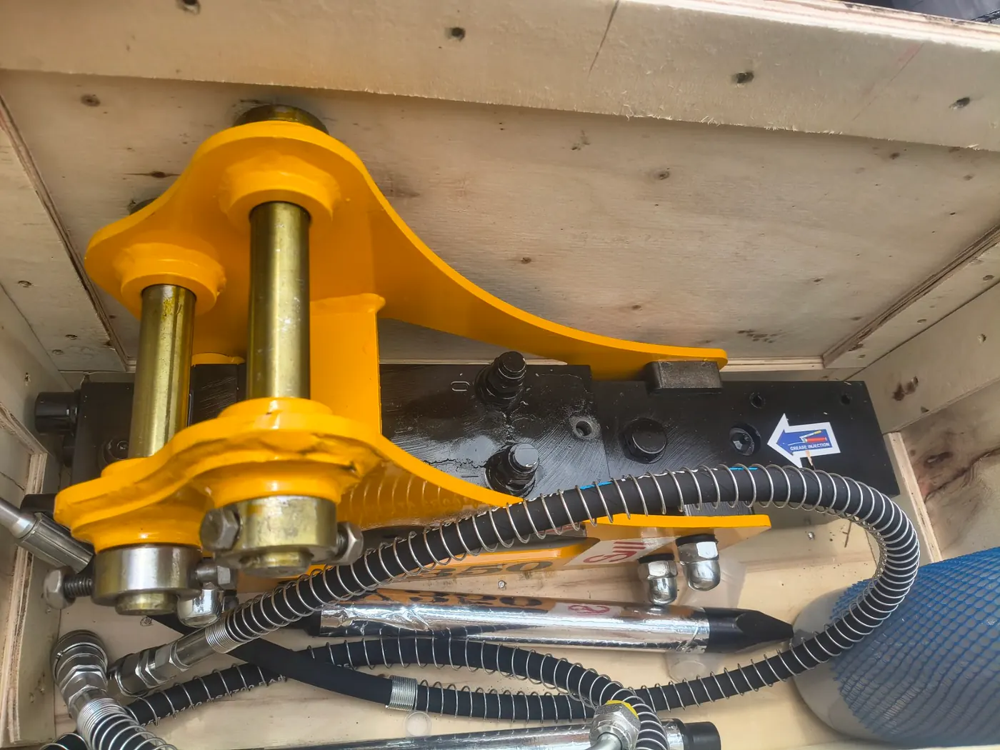

Минибагер в Гурмазово — изкопи край Божурище
Услуги с минибагер в с. Гурмазово: изкопи за огради, дренаж, свредел, чук. Доставка от Костинброд с прозрачна цена. Гумени вериги за готови дворове.

Гурмазово е в община Божурище — район с активни дворни проекти. Предлагаме изкоп + прикачен инвентар (кофи, свредел, чук, палец), без извозване на материали.
Терен и достъп
Селски дворове с различна ширина на входа. При тесни порти Rippa R15 (~1 м) е по-практичен от 2.5–3.5 т машините. Гумените вериги са плюс при вече положен паваж.
Услуги в Гурмазово
- Ивични основи и оградни колове
- Дренажни и ВиК канали
- Подравняване на парцел
- Разбиване на пътеки; захват с палец
Доставка
Доставка на багера от Костинброд: обикновено 40–60 €. При цял ден уточняваме крайната оферта по телефона преди тръгване.
Услуги в Гурмазово
- Изкопи за канали и шахти
- Изкопи за огради и дупки за колове
- Дренаж и ВиК
- Подравняване на терен
- Свредел 150 мм
- Хидравличен чук
- Хидравличен палец
Цени за Гурмазово
Изкоп / планиране: 200–230 € / смяна. С чук: 250–270 €. Минимум половин ден: 100–120 €.
Доставка на минибагера: 40–60 € типично (зона 15–30 км). Пълна таблица: Цени.